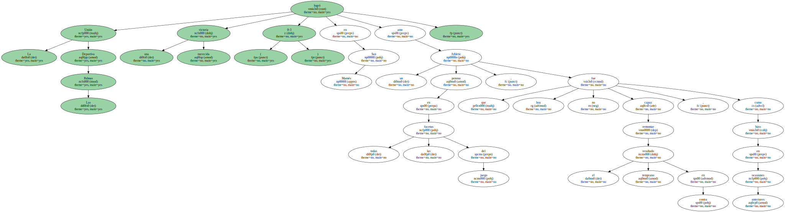
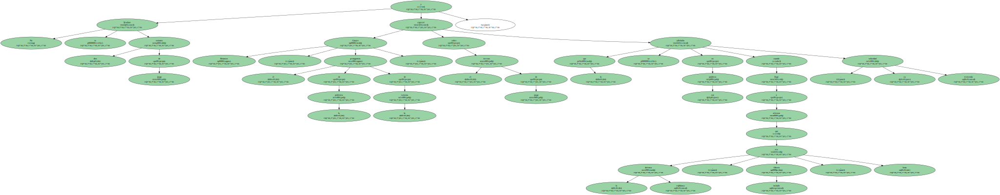
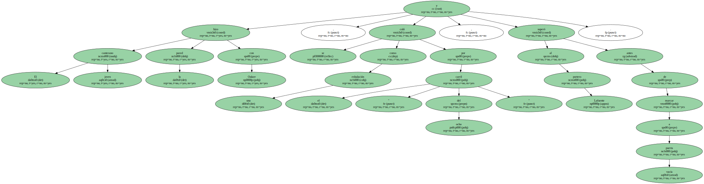
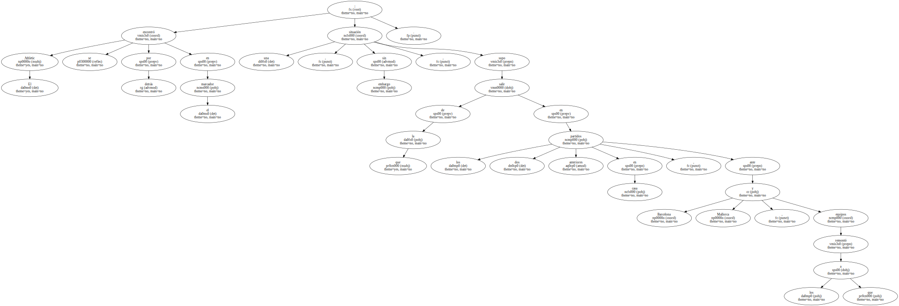
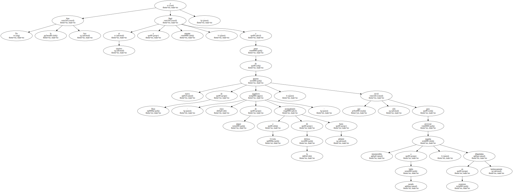
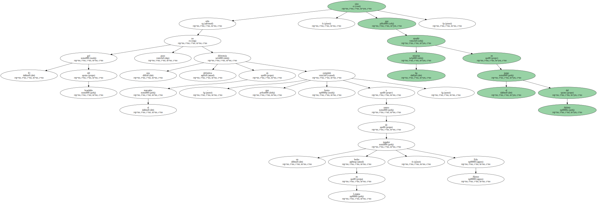

La Unión Deportiva Las Palmas logró una merecida victoria ( 0-3 ) en San Mamés ante un Athletic penoso en todas las facetas del juego , que hoy no fue capaz remontar el temprano resultado en contra , como hizo en anteriores ocasiones.
No se llevaban diez minutos de juego y Guayre Betancor , el protagonista de la polémica de la semana , expresó sobre el terreno de juego lo que se adivinaba en sus palabras cuando llegó a afirmar que la defensa rojiblanca , incluido Alkorta , era lenta : su tremenda velocidad.
El joven canterano hizo la pared con Oulare , se coló como una exhalación por el " carril del ocho " , y superó al portero Lafuente antes de marcar a puerta vacía.
El Athletic se encontró por detrás en el marcador ; una situación , sin embargo , de la que supo salir en los dos partidos anteriores en casa , ante Barcelona y Mallorca , equipos a los que remontó.
No lo hizo hoy y ni siquiera llegó a empatar , a pesar de nueva apuesta de Rojo - cinco jugadores de ataque acompañando a Urrutia de la defensa hacia adelante - , que sólo sirvió para provocar innumerables jugadas a balón parado , dilapidadas en ocasiones lastimosamente.
Esa ventaja , que ya era de gran valía para el conjunto amarillo , se transformó en un auténtico tesoro cuando la amplió Alvaro , con un cabezazo que finiquitó una buena jugada de Pablo Lago por la banda derecha.

El gol del brasileño no sólo puso una diferencia definitiva en el marcador - que completó Josico a centro de un jugador hecho en Lezama , Edu Alonso - , sino que enseñó las miserias en el juego del Athletic.
